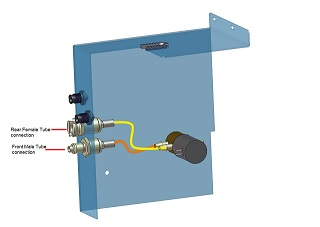
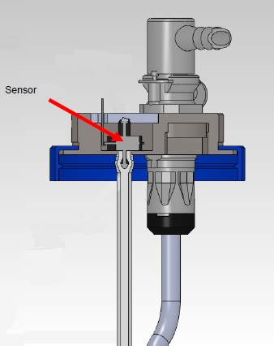
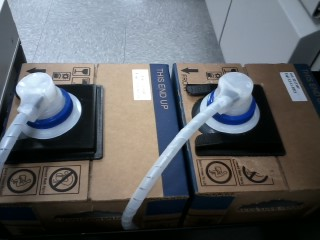
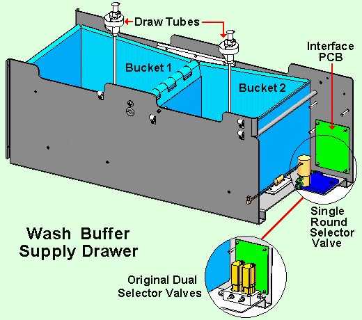

DxI Fluidics: Wash Buffer Supply Drawer Operating Principles
Purpose
This document details the operating principles for the wash buffer supply drawer.
Wash Buffer Related Subsystems
- Pumps and manifold: This subsystem includes the pumps for sample and reagent pipetting, pumps for particle wash, a manifold, and the internal reservoir inside the manifold.
- Sample probe and reagent probe wash: This subsystem includes the probe wash system for the reagent and pipettors and sample pipettor.
- Particle wash aspiration: This subsystem includes the components necessary for particle wash aspiration.
- Wash buffer supply: This subsystem includes a means for the operator to load containers of bulk wash buffer onto the instrument and delivers the wash buffer to the internal reservoir.
Module Function
The wash buffer supply drawer stores five gallons of wash buffer and automatically switches from one container to the other when one container is empty. The amount of buffer in the drawer supports instrument operation for three hours.
Module Location
The wash buffer supply drawer is located in the pullout drawer near the right front corner of the DxI.
Operational Overview
New Design: The new Wash Buffer Supply Drawer has pressure sensors and requires System Software 5.2 or higher. The pressure is displayed to the operator as an estimated percent full.
- Not Present
- Disabled
- Low
- In Use
- Empty
- Present
- Wash buffer containers are loaded into the instrument.
- Pressure sensor of the buffer and container is displayed to the operator as % Full.
- The buffer supply peristaltic pump pumps buffer from one container to the internal reservoir until a float switch in the reservoir is actuated, indicating that the reservoir is full.
- As the instrument is manually or automatically primed, buffer is pumped from the reservoir to the pipetting or dispense probes.
- When assays are being run, buffer is pumped to the wash tower nozzle each time a probe is washed.
- Buffer containers to move from the container to the reservoir (actuated by the float sensor in the reservoir) and to the wash towers until currently in-use container is detected as Empty.
- If a container is detected as Empty (at
5%
fluid level remaining) by the pressure sensor, these actions occur:
- A switching valve actuates, connecting the unused bulk wash buffer container to the pumping system.
- The operator is signaled to replace the empty bulk wash buffer container by:
- A flashing yellow light on the upper front of the instrument.
- A flashing buffer supply icon on the supplies panel on the horizontal surface near the substrate loaders.
- Weight Buckets
- Weight Sensors
- Buffer Divider Wall
- Rear Cap/Tube Assembly with pressure sensor
- Front Cap/Tube Assembly with pressure sensor
Note: Cap/Tube Assemblies cannot be installed to the old buffer drawer.
- Wash Buffer Container Shims
- Bulk Fluid Tray Interface PCB cover with tubing and sensor connections

Component Function
- Single Round Selector Valve
- Bulk Fluid Tray Interface PCB
| Component | Description and Function |
| Drawer Storage, Wash Buffer | Two storage spaces for two Wash Buffer Containers. |
| Container, Bulk Wash Buffer
|
Container with 2.5 gallons of wash buffer consists of a plastic liner or container inside a cardboard container.
Refer to Specs - Wash Buffer Container document for more information. |
| PCB. Bulk Fluid Tray Interface | Provides connection points for outgoing and incoming signals and voltages required by wash buffer supply drawer. PCB is mounted to upper rear of wash buffer supply drawer. |
| Valve, Container Selector
 |
Switches and connects the new buffer container to the pumping system. The valve is used in the wash buffer drawer as part of the bubble trap hardware. Refer to Fluidics: Wash Buffer Confirmation Operating Principles document for more details. The valve is mounted on the Bulk Fluid Tray Interface PCB cover. |
| Cap/Tube Assembly

|
Assembly contains:
|
| Shim Assembly
 |
Requires for the Pressure Sensor:
|

Old Design: The weight is displayed to the operator as an estimated percent full.
- Not Present
- Disabled
- Low
- In Use
- Empty
- Present
- Wash buffer containers are loaded into the instrument.
- Weight of the buffer and container is displayed to the operator as % Full.
- The buffer supply peristaltic pump pumps buffer from one container to the internal reservoir until a float switch in the reservoir is actuated, indicating that the reservoir is full.
- As the instrument is manually or automatically primed, buffer is pumped from the reservoir to the pipetting or dispense probes.
- When assays are being run, buffer is pumped to the wash tower nozzle each time a probe is washed.
- Buffer continues to move from the container to the reservoir (actuated by the float sensor in the reservoir) and to the wash towers until the currently in-use container is detected as Empty.
- If a container is detected as Empty (at
10% fluid level remaining) by the Hall-Effect or magnet sensors, these actions occur:
- A switching valve actuates, connecting the unused bulk wash buffer container to the pumping system.
- The operator is signaled to replace the empty bulk wash buffer container by:
- A flashing yellow light on the upper front of the instrument.
- A flashing buffer supply icon on the supplies panel on the horizontal surface near the substrate loaders.

Component Function
- Buckets
- Sensor, Hall Effect
- Valve, Selector (for serial numbers 600000 to 600844)
| Component | Description and Function |
|---|---|
| Buckets, Wash Buffer | Refer to the Fluidics OP: Liquid Waste Drawer document. |
| Container, Bulk Wash Buffer
|
Container with 2.5 gallons of wash buffer consists of a plastic liner or container inside a cardboard container.
|
| PCB, Bulk Fluid Tray Interface | Provides connection points for outgoing and incoming signals and voltages required by wash buffer supply drawer. PCB is mounted to upper rear of wash buffer supply drawer. |
| Sensor, Hall Effect, Weight Scale | Refer to the Fluidics OP: Liquid Waste Drawer document. |
| Valves, Container Selector | For serial numbers 600000 to 600844, refer to Refer to the
Fluidics OP: Liquid Waste Drawer document.
For serial numbers greater than 600844, refer to the Fluidics OP: Wash Buffer Confirmation document. The valve is used in the wash buffer drawer as part of the bubble trap hardware. |
| Cap/Tube Assembly | Cap/Tube assembly is used to draw wash buffer from the cubitainer to the wash buffer transfer peri-pump.
Note: For illustrations of new parts and specifications, refer to the
Specs - Wash Buffer Container document.
|
Wash Buffer Usage
- Dilutions: Wash buffer is used in making on-board dilutions. Wash buffer and sample are pipetted into dilution vessels (DVs) and mixed by either ultrasonics or fluid dispense. A portion of that mixture is then pipetted into another vessel and processed to obtain a result.
- Diluent: Wash buffer is used as a diluent when added to the reaction vessel (RV) with reagents.
- Probe Wash: Wash buffer is used to wash probes internally and externally to prevent carryover.
- Particle Wash: Wash buffer is used for particle wash to draw away unwanted constituents.
- Priming: Wash buffer is used to prime the tubing between pumps and probes to improve the precision and accuracy by providing a solid path.
Interacting Devices
- Wash buffer transfer peristaltic pump
- Pipettor wash tower peristaltic pumps